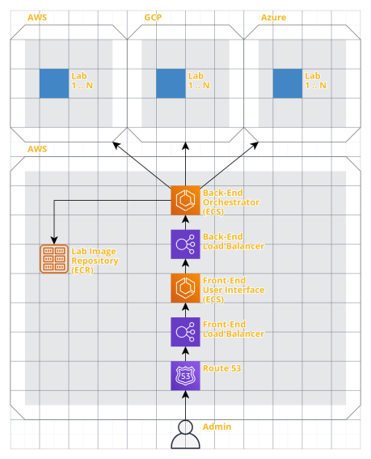
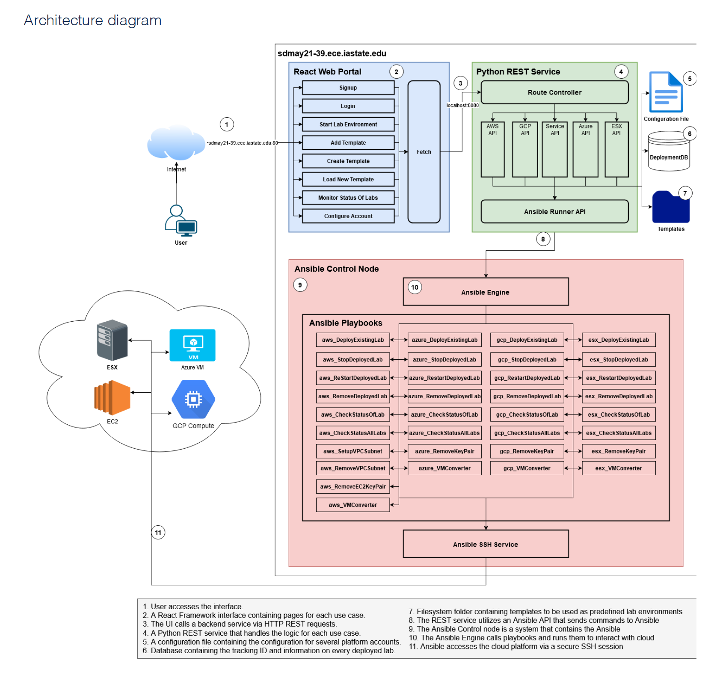
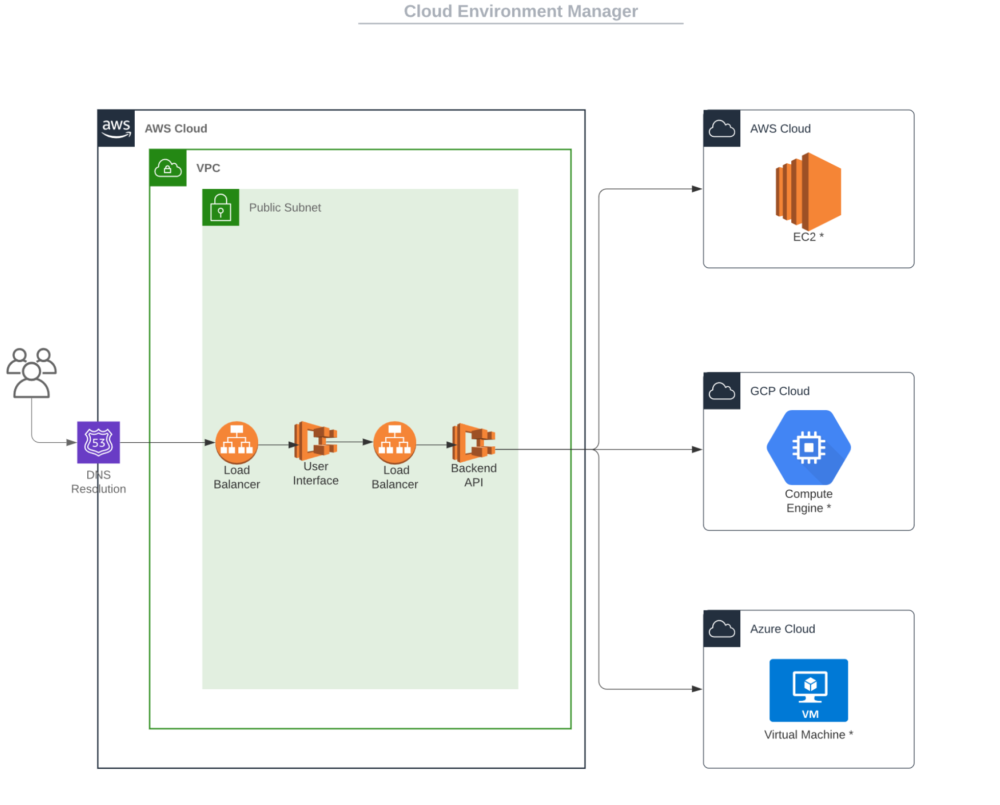

- Projects
- Sr-Design Project
Cloud Environment Manager(Sr-Design Project)
Role: Report Manager
For this project we will be creating a platform that will launch lab environments on-demand following these uses cases:
- Launching an on-demand attack and defense environment (e.g., hosting a CTF competition in which each competitor has their own lab environment)
- Launching on-demand testing environment (e.g., trying to replicate an IT or Security environment a client has in order to test a product or service)
- Demonstrating new technologies (e.g., demonstrate a tool such as Tanium to a potential buyer of the tool, including enough endpoints within the environment to show how the tool scales) We envision the platform includes a web-based front-end which is used to manage the different lab environments. Lab environments would be launched from templates and capable of deploying to different cloud environments such as:
- AWS
- GCP
- Azure
- ESX (on-prem)
Link to the Teams Website for more Info : Sr-Design Project More Info


